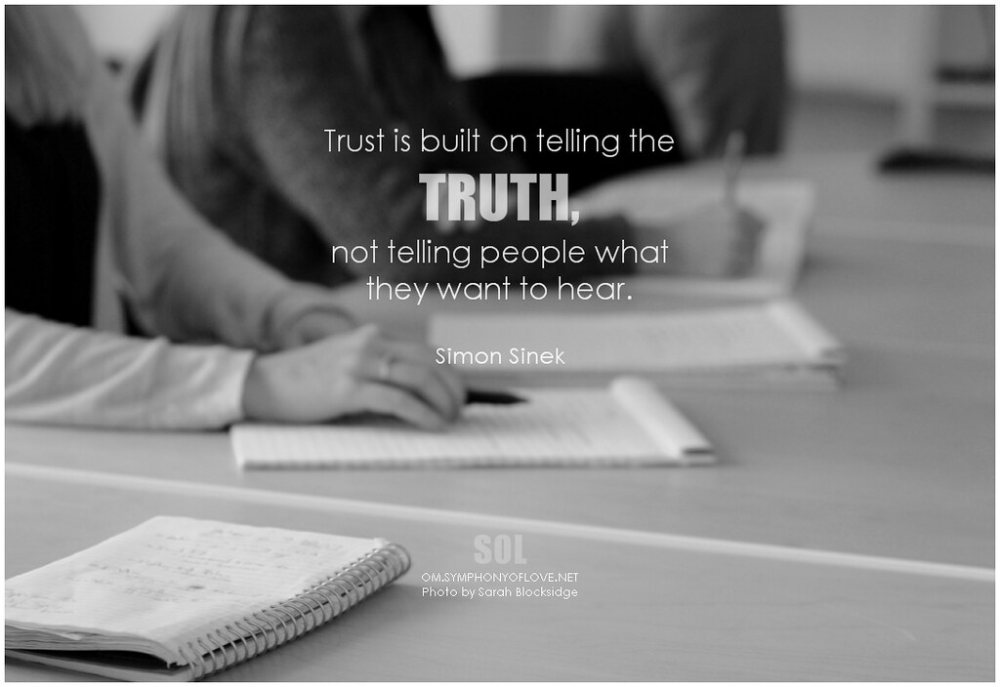

Being Honest To Yourself And Those Around You
Being Honest to people around you is one thing but being honest to yourself can give you good self esteem and the way you live will be a lot nicer and healthier
Why Does Being Honest To Others Matter
Increases realtionship status with friends and family
Gives you better communication skills as an adult if you dont lie as a child
You will be known as a much more honest person if you live your life by being honest and telling the truth no matter how bad

"Simon Sinek Trust is built on telling the truth, not telling people what they want to hear" by symphony of love is licensed under CC BY-SA 2.0
Why Should You Be Honest To Yourself
Being Honest to yourself can improve your self image and how you see yourself
It can also help with having good values to live by
You will be able to enjoy your life and the people around you more
"To be honest as this world goes is to be one man picked out of ten thousand" by praba_tuty is marked with CC PDM 1.0